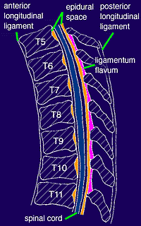

|
 MIDLINE SAGITTAL VIEW OF THE THORACIC SPINE The epidural space (shown in orange) lacks segmentation. The depth of the epidural space decreases at more cephalad levels. The spinous processes in the midthoracic levels are steeply angulated and overlap the laminae of the vertebral body immediately inferior. |